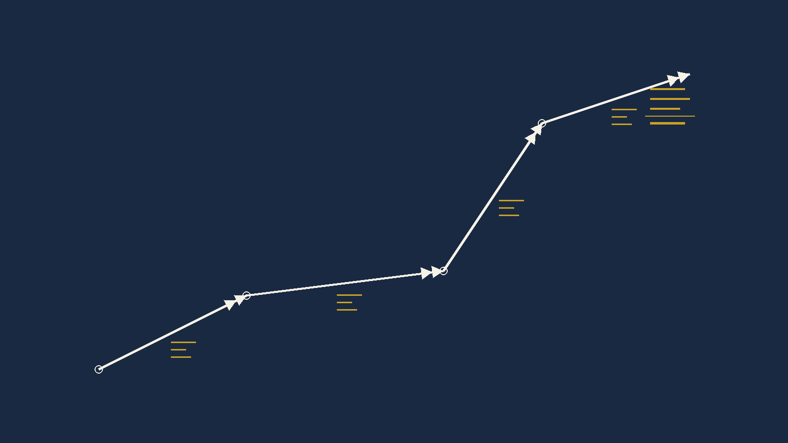
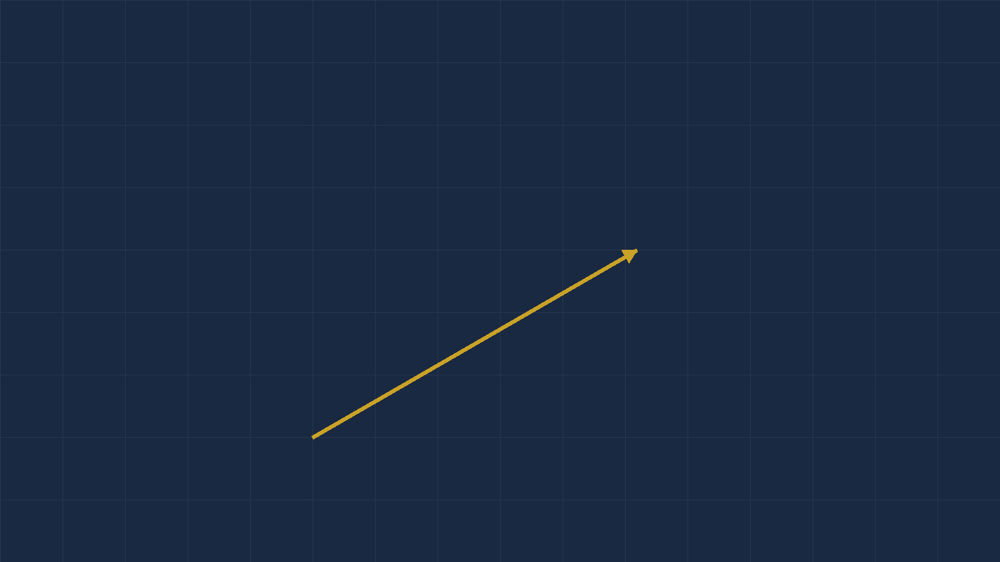
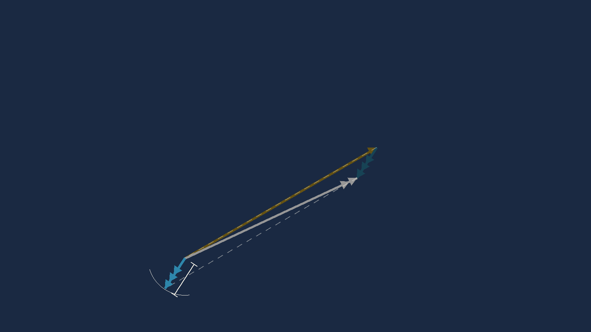

Every chapter of this module has been one operation at a time. This is where they all run in a single row of a table — and where the computer stops being a calculator and becomes a flight planning tool.
The chart is marked, the legs are measured, the forecast is in your hand. In front of you is a table with fourteen columns and seven rows, and every cell is empty except the ones you were given.
Nothing in that table is new to you. Column by column it is Chapter 6 (a calibrated airspeed and a temperature become a true airspeed), then Chapter 8A (a track and a wind become a heading and a ground speed), then this chapter (a true heading becomes the number you will actually steer by), then Chapter 5 (a distance and a ground speed become minutes).
The skill being tested is not any one of those. It is doing all four in order without losing your place. That is why the exercises at the end of this chapter are worked across the rows and never down the columns.
Strip the printing away and a flight plan row is a chain of five conversions. Each one hands its answer to the next, which is exactly why a mistake in the third column is invisible until the last one is wrong.
| Step | You have | You want | What does it | Chapter |
|---|---|---|---|---|
| 1 | CAS, pressure altitude, OAT | TAS | FLT → Airspeed → Planned TAS | 6 |
| 2 | Track, TAS, W/V | Heading (T), GS | PLAN → Leg | 8A |
| 3 | Heading (T), variation | Heading (M) | arithmetic, or the Var field |
this one |
| 4 | Heading (M), deviation | Heading (C) | arithmetic, or the Dev field |
this one |
| 5 | Distance, GS | Time | FLT → Ground Speed, or ETE |
5 |
A student who can do steps 1, 2 and 5 in isolation and cannot fill in a flight plan row has not learned navigation. They have learned three party tricks.
The examination knows this, which is why the flight plan questions are worth disproportionate marks and why they are where candidates run out of time.
Steps 3 and 4 are the only genuinely new arithmetic in this chapter, and they are two lines. The danger is not the arithmetic. It is the sign.
Variation west, magnetic best.
Variation east, magnetic least.
So going from true to magnetic:
Magnetic = True + West variation
Magnetic = True − East variation
And deviation behaves identically, one step further along:
Compass = Magnetic + West deviation.
Worked: true 095°, variation 5°W → magnetic 100°. Then deviation 1°W → compass 101°. West both times, so you add twice.
Most rows in the exercises write variation in words — 5°W,
3°E — and there is no ambiguity. But some rows write it as a
signed number, and there the two conventions you will meet are exact
mirrors of each other.
| + means | − means | |
|---|---|---|
| The exercises in this chapter | East | West |
The CX-3's Var field |
West | East |
Type the book's sign straight into the machine and you do not get the variation slightly wrong. You get it wrong by twice the variation — once for applying it backwards, once for the correction you needed and did not get. On a 34° variation, which appears in these exercises, that is 68°.
The CX-3's own words, from the User's Guide V1.3: "east is least, west is best: enter a positive number for a westerly variation and a negative number for an easterly variation." Its own worked example enters 17° East as 1 7 +/− → −17.
Read the machine's convention as the mnemonic made mechanical, not as
a contradiction of it. It computes Magnetic = True + Var,
so entering east as negative produces the subtraction the mnemonic describes. The
arithmetic is the same rule you already know. What changes is only which key you
press first.
The safe habit, and it costs two seconds: never type a variation as a bare signed number. Say the word to yourself — "five west" — decide from the mnemonic whether the magnetic heading gets bigger or smaller, and only then decide what to press.
Variation runs to tens of degrees and demands attention. Deviation is usually one, two, three degrees, and a student who has fought through the variation quietly forgets it.
It is the last column before the number you actually fly. An unapplied 3° deviation is 3° of track error for the whole leg — five miles at the end of a hundred.
Here is a single row of Flight Plan 1, worked from the left edge to the right, with nothing skipped. Once you can do this one you can do all thirty.
Worked example 8B.1. Fill the row. Find TAS, heading true, heading magnetic, heading compass, ground speed and time.
1. TAS. Density ratio at 2000 ft and
−10°C is 1.018, so
TAS = 160 ÷ √1.018 = 158.6
→ 159 kt
2. Heading and GS. Wind from 330 points
toward 150. θ = 150 − 100 = 50°
WCA = sin⁻¹(17·sin50 ÷ 159) = 4.7°
HDG = 100 − 4.7 = 95.3 → 095°(T)
GS = 159·cos4.7 + 17·cos50 = 169.4
→ 169 kt
3. Magnetic. Variation 5°West,
so magnetic is best — bigger.
095 + 5 = 100°(M)
4. Compass. Deviation 1°West, same
direction again.
100 + 1 = 101°(C)
5. Time.
50 ÷ 169.4 × 60 = 17.7
→ 18 min
159 kt · 095(T) · 100(M) · 101(C) · 169 kt · 18 min
CAS 160, OAT −10,
PAlt 2000. Read TAS.TCrs 100 · TAS from step 1 ·
WDir 330 · WSpd 17.Var — 5° West, and west is
positive on this machine, so enter
5, no sign key.Dev — 1° West, same again: 1.Dist 50, and Rate if you want the fuel.GS, CHdg and ETE straight
off the leg.CHdg 101 · GS 169 · ETE 18 min
Look at what the machine did there.
Method 1 needed four separate calculations and two sign decisions. The
PLAN leg took the same inputs and returned the compass heading
directly — variation and deviation already inside it. That is the
first time in this module the electronic computer has saved you real work rather
than just time, and it is why this chapter exists.
Sanity check. The wind is from 330 on a track
of 100 — behind your left shoulder. Behind, so ground speed beats TAS: 169
against 159, yes. On the left, so it drifts you right and you aim left: 095 is
left of 100, yes. Both variation and deviation are west, so both headings climb:
095 → 100 → 101, yes.
If your compass heading had come out lower than your true heading with
two westerly corrections, you applied them backwards.
One leg is a fair fight between the formula and the machine. Seven legs is not.

Four of the PLAN inputs are marked with a blue circle
icon: TAS, Var, Dev and
Rate. A blue circle means this value repeats across every
leg. Enter it once and every leg has it.
So a seven-leg plan is not seven times the work. It is one aircraft set-up, then seven pairs of numbers — track and distance — and a wind for each.
Per-leg inputs are Dist, TCrs,
TAS, WDir, WSpd, Var,
Dev, Rate, Dep; per-leg outputs are
GS, CHdg, ETE, Fuel. The
Total Trip line returns total Dist, ETE,
ETA and Fuel.
At the foot of the plan the machine totals the distance, the elapsed time, the fuel, and — given a departure time — the ETA.
Add a leg, change a wind, or accept a re-route, and every one of those totals moves on its own. Doing that by hand means re-adding four columns and it is exactly where a tired pilot makes an arithmetic error at one in the morning.
Set the departure in UTC and read the ETA in UTC. Mixing local and UTC inside one flight plan is a classic and expensive mistake, and the machine will not catch it for you — it has no idea which one you typed.
Under SET the CX-3 carries an Aircraft Profile. Put your TAS and your fuel flow in it and they are waiting for you every time.
The same menu carries K, the instrument calibration factor used
to convert OAT to TAT and back, defaulting to 1.0. That is the electronic
replacement for the E6B's blue scale, and unless your operator tells you
otherwise, 1.0 is what you leave it at.
And the housekeeping one: clear the memory before an examination. The requirement is written into the Guide for FAA knowledge exams. Whether DGCA imposes the same is not something I can show you in writing, so treat clearing it as good practice rather than as a rule I have proved.
Back to the table at the start of Chapter 8A. Row one was finding track. Row two was finding heading. Row three is finding the wind, and it is the only one where the answer is something nobody gave you.
A forecast wind covers a large area and is valid for several hours. It is an average of a region over a period, and it was written before you took off.
The wind you find in flight is the wind at your level, in your part of the sky, over the last twenty minutes. It is more recent and more local than anything you were handed on the ground, and every remaining leg of your plan is better for having it.
You are heading 060°(T) at a TAS of 140 knots, flying some planned track.

You pass a known landmark at A. Twenty minutes later you get a fix at B. On the chart you measure the line from A to B: it runs 065°(T) and it is 40 nautical miles long.
Forty miles in twenty minutes is 120 knots over the ground. And now you have four numbers, which is one more than you need:
The wind is the vector that joins the tip of the air vector to the tip of the ground vector.
Nothing else. Draw where you were pointing, draw where you actually went, and the line closing the gap between the two arrowheads is the wind — pointing the way it blows, with a length equal to its speed.
Worked example 8B.2. Heading 060°(T), TAS 140 kt, track made good 065°(T), ground speed 120 kt. Find the W/V.
1. Break the air vector into east and
north parts:
E = 140·sin060 = 121.24
N = 140·cos060 = 70.00
2. Same for the ground vector:
E = 120·sin065 = 108.76
N = 120·cos065 = 50.71
3. Subtract, ground minus air.
This is the step whose order decides everything:
E = 108.76 − 121.24 = −12.48
N = 50.71 − 70.00 = −19.29
4. Wind speed is the hypotenuse:
√(12.48² + 19.29²) = 22.98
5. That vector points toward
atan2(−12.48, −19.29) = 213°. A wind is named
for where it comes from, so add 180.
W/V 033° / 23 kt
THdg 060 · TAS
140 · TCrs 065
· GS 120.WDir, WSpd and WCA.W/V 033° / 23 kt
Now the trap from Chapter 8A, seen from the other side. The function called Wind Correction was the wrong tool for finding a heading. Here it is exactly right. Its name has always described what it takes, not what it gives you — and reading it that way makes the whole menu obvious.
Sanity check. You drifted from 060 to 065
— five degrees right — so the wind must be pushing from your
left, somewhere north-westerly to northerly. 033 is north-north-east,
which is on your left on a heading of 060. Yes.
And your ground speed dropped from 140 to 120, so it must have a head component.
A wind from 033 against a heading of 060 is 27° off the nose. Yes.
If you had computed 213° instead, you would have subtracted the vectors the
wrong way round — and 213 is exactly the reciprocal of 033, which is how
that error always announces itself.

The arithmetic above gives 32.9°, which rounds to 033. The published answer for this example is 034 — read off a rotating disc to the nearest degree.
Neither is wrong to any degree that matters here. But when you are choosing between exam options that sit a degree or two apart, trust the arithmetic. It is exact and it is reproducible, and the next section explains when even the arithmetic cannot help you.
Here is something the source book does not tell you, and it will save you an argument with a source key one day.
The wind is the small difference between two large vectors. When the wind is light and the aeroplane is fast, that difference is a short line joining the tips of two long ones — and the direction of a short line between two long ones is extremely sensitive to any error in either.
Get your measured track wrong by one degree, and the wind direction you compute can move by up to roughly
TAS ÷ wind speed degrees.
Often it moves much less — it depends on the geometry — but that ratio is the worst case and it is worth carrying in your head.
A worked instance from the question set below. Row 29: heading 274, track 275, TAS 290, GS 270. The wind works out at about 21 knots, so TAS ÷ W is roughly 14. And measured directly: one degree of track error swings the computed wind direction by 13.2°.
And the opposite extreme. Row 37: TAS 460, GS 505, and a wind of about 149 knots. TAS ÷ W is 3, and the measured swing is 1.5°. A big wind pins its own direction down.
Trust a found wind's SPEED more than its DIRECTION when the wind is light relative to your TAS. The speed comes out of a length, which is robust; the direction comes out of an angle between two nearly-parallel lines, which is not.
Do not chase a few degrees. If your answer and the key differ by three or four degrees on a light wind at high speed, neither of you is wrong — the data does not contain the answer to that precision.
Fly for longer before you fix. The fix at B is what sets your track accuracy. Twenty minutes gives a better wind than five, because the same half-mile of fix error is a smaller angle over a longer line. This is the practical reason wind finding is done over a decent run and not opportunistically.
Work across the rows. One row at a time, left to right, finishing each before you start the next.
Doing it column by column — all the TAS values, then all the headings — is faster and it is worthless. It turns the exercise into typing, and it hides the one thing being trained: holding a five-step chain in your head without dropping a link.
The blank cells are TAS, HDG(T), HDG(M), HDG(C), GS and Time. Everything else is given.
| # | PA ft | OAT °C | CAS | TAS | Track °(T) | W/V | HDG °(T) | Var | HDG °(M) | Dev | HDG °(C) | GS | Dist NM | Time min |
|---|---|---|---|---|---|---|---|---|---|---|---|---|---|---|
| 1 | 2000 | -10 | 160 | 100 | 330/17 | 5°W | 1°W | 50 | ||||||
| 2 | 4700 | -2 | 170 | 227 | 300/10 | 3°E | 2°E | 112 | ||||||
| 3 | 4000 | -10 | 175 | 134 | 262/17 | 3°W | 1°E | 30 | ||||||
| 4 | 2000 | +2 | 170 | 157 | 110/12 | 6°W | 2°W | 38.5 | ||||||
| 5 | 6000 | -3 | 154 | 100 | 320/18 | 4°E | 1°W | 60 | ||||||
| 6 | 5000 | -15 | 150 | 050 | 110/45 | 8°W | 2°E | 13 | ||||||
| 7 | 10000 | -8 | 173 | 320 | 181/27 | 3°E | 3°W | 44 |
| # | PA ft | OAT °C | CAS | TAS | Track °(T) | W/V | HDG °(T) | Var | HDG °(M) | Dev | HDG °(C) | GS | Dist NM | Time min |
|---|---|---|---|---|---|---|---|---|---|---|---|---|---|---|
| 1 | 5000 | +5 | 170 | 070 | 230/25 | 5°W | 1°E | 86 | ||||||
| 2 | 6500 | -2 | 170 | 234 | 210/30 | 3°W | 2°E | 71 | ||||||
| 3 | 6000 | +2 | 174 | 240 | 210/22 | 4°W | 1°E | 57 | ||||||
| 4 | 7500 | +2 | 175 | 166 | 110/30 | 6°W | 3°E | 89 | ||||||
| 5 | 8000 | -2 | 174 | 190 | 245/36 | 4°E | 1°W | 60 | ||||||
| 6 | 9000 | -5 | 180 | 050 | 110/45 | 11°W | 2°E | 13 | ||||||
| 7 | 12000 | -11 | 184 | 324 | 190/47 | 3°E | 2°E | 50 |
Sixteen legs, and the altitudes climb. Watch legs 9 and 10 — there is a reason they are up there, and it is explained in the answers.
| # | PA ft | OAT °C | CAS | TAS | Track °(T) | W/V | HDG °(T) | Var | HDG °(M) | Dev | HDG °(C) | GS | Dist NM | Time min |
|---|---|---|---|---|---|---|---|---|---|---|---|---|---|---|
| 1 | 3000 | +15 | 190 | 315 | 045/33 | 7°W | 2°E | 88 | ||||||
| 2 | 9000 | -10 | 205 | 324 | 335/21 | 6°E | 1°W | 105 | ||||||
| 3 | 14000 | +5 | 142 | 071 | 030/55 | 11°W | 1°W | 80 | ||||||
| 4 | 4000 | -10 | 132 | 300 | 190/25 | 8°E | 3°E | 332 | ||||||
| 5 | 3500 | -17 | 130 | 019 | 300/28 | 9°W | 2°E | 110 | ||||||
| 6 | 7500 | +0 | 160 | 342 | 130/40 | 3°E | 1°W | 92 | ||||||
| 7 | 9500 | +0 | 180 | 262 | 010/38 | 34°E | 2°W | 145 | ||||||
| 8 | 7000 | +15 | 159 | 021 | 265/32 | 16°W | 4°W | 112 | ||||||
| 9 | 22500 | -30 | 202 | 033 | 310/50 | 7°W | 2°E | 46 | ||||||
| 10 | 28000 | -55 | 194 | 162 | 210/20 | 14°W | 3°E | 1312 | ||||||
| 11 | 2000 | +4 | 148 | 228 | 280/20 | 10°W | 2°E | 84 | ||||||
| 12 | 3000 | +16 | 123 | 351 | 060/30 | 12°W | 2°W | 95 | ||||||
| 13 | 5000 | -5 | 166 | 043 | 123/46 | 9°E | 1°W | 62 | ||||||
| 14 | 2500 | +0 | 123 | 032 | 120/30 | 4°E | 1°E | 49 | ||||||
| 15 | 3500 | +8 | 96 | 162 | 140/40 | 9°W | 1°W | 130 | ||||||
| 16 | 4000 | -5 | 111 | 343 | 220/30 | 11°E | 1°W | 82 |
Each row gives you a heading, a TAS, the track you actually made good and your ground speed. One column is blank: the W/V.
All directions are degrees TRUE. Remember the direction of the subtraction — ground vector minus air vector — and remember that a wind is named for where it comes from, so the answer is the reciprocal of the vector you just computed.
| # | HDG°(T) | W/V | Track made good°(T) | TAS | GS |
|---|---|---|---|---|---|
| 1 | 209 | 219 | 150 | 134 | |
| 2 | 270 | 266 | 180 | 202 | |
| 3 | 223 | 224 | 206 | 246 | |
| 4 | 069 | 079 | 138 | 124 | |
| 5 | 299 | 293 | 125 | 120 | |
| 6 | 167 | 162 | 202 | 190 | |
| 7 | 213 | 231 | 85 | 80 | |
| 8 | 014 | 005 | 200 | 218 | |
| 9 | 330 | 348 | 90 | 90 | |
| 10 | 179 | 168 | 196 | 226 | |
| 11 | 098 | 100 | 310 | 338 | |
| 12 | 091 | 080 | 440 | 435 | |
| 13 | 050 | 055 | 398 | 415 | |
| 14 | 351 | 340 | 393 | 405 | |
| 15 | 288 | 292 | 434 | 462 | |
| 16 | 276 | 281 | 335 | 316 | |
| 17 | 280 | 275 | 430 | 435 | |
| 18 | 291 | 292 | 330 | 360 | |
| 19 | 097 | 095 | 343 | 322 |
| # | HDG°(T) | W/V | Track made good°(T) | TAS | GS |
|---|---|---|---|---|---|
| 20 | 056 | 055 | 287 | 320 | |
| 21 | 108 | 109 | 480 | 530 | |
| 22 | 176 | 171 | 428 | 438 | |
| 23 | 270 | 265 | 335 | 308 | |
| 24 | 248 | 243 | 406 | 332 | |
| 25 | 247 | 252 | 380 | 352 | |
| 26 | 200 | 202 | 435 | 403 | |
| 27 | 198 | 202 | 340 | 325 | |
| 28 | 275 | 275 | 435 | 395 | |
| 29 | 274 | 275 | 290 | 270 | |
| 30 | 321 | 326 | 338 | 280 | |
| 31 | 045 | 061 | 285 | 305 | |
| 32 | 196 | 205 | 210 | 245 | |
| 33 | 311 | 295 | 482 | 435 | |
| 34 | 011 | 358 | 198 | 211 | |
| 35 | 355 | 008 | 248 | 270 | |
| 36 | 111 | 115 | 120 | 114 | |
| 37 | 228 | 245 | 460 | 505 | |
| 38 | 175 | 168 | 121 | 114 |
| # | PA ft | OAT °C | CAS | TAS | Track °(T) | W/V | HDG °(T) | Var | HDG °(M) | Dev | HDG °(C) | GS | Dist NM | Time min |
|---|---|---|---|---|---|---|---|---|---|---|---|---|---|---|
| 1 | 2000 | -10 | 160 | 158 | 100 | 330/17 | 095 | 5°W | 100 | 1°W | 101 | 169 | 50 | 18 |
| 2 | 4700 | -2 | 170 | 180 | 227 | 300/10 | 230 | 3°E | 227 | 2°E | 225 | 176 | 112 | 38 |
| 3 | 4000 | -10 | 175 | 180 | 134 | 262/17 | 138 | 3°W | 141 | 1°E | 140 | 190 | 30 | 9 |
| 4 | 2000 | +2 | 170 | 172 | 157 | 110/12 | 154 | 6°W | 160 | 2°W | 162 | 164 | 38.5 | 14 |
| 5 | 6000 | -3 | 154 | 166 | 100 | 320/18 | 096 | 4°E | 092 | 1°W | 093 | 180 | 60 | 20 |
| 6 | 5000 | -15 | 150 | 155 | 050 | 110/45 | 065 | 8°W | 073 | 2°E | 071 | 128 | 13 | 6 |
| 7 | 10000 | -8 | 173 | 199 | 320 | 181/27 | 315 | 3°E | 312 | 3°W | 315 | 219 | 44 | 12 |
| # | PA ft | OAT °C | CAS | TAS | Track °(T) | W/V | HDG °(T) | Var | HDG °(M) | Dev | HDG °(C) | GS | Dist NM | Time min |
|---|---|---|---|---|---|---|---|---|---|---|---|---|---|---|
| 1 | 5000 | +5 | 170 | 183 | 070 | 230/25 | 073 | 5°W | 078 | 1°E | 077 | 206 | 86 | 25 |
| 2 | 6500 | -2 | 170 | 186 | 234 | 210/30 | 230 | 3°W | 233 | 2°E | 231 | 158 | 71 | 27 |
| 3 | 6000 | +2 | 174 | 190 | 240 | 210/22 | 237 | 4°W | 241 | 1°E | 240 | 170 | 57 | 20 |
| 4 | 7500 | +2 | 175 | 196 | 166 | 110/30 | 159 | 6°W | 165 | 3°E | 162 | 178 | 89 | 30 |
| 5 | 8000 | -2 | 174 | 195 | 190 | 245/36 | 199 | 4°E | 195 | 1°W | 196 | 172 | 60 | 21 |
| 6 | 9000 | -5 | 180 | 205 | 050 | 110/45 | 061 | 11°W | 072 | 2°E | 070 | 178 | 13 | 4 |
| 7 | 12000 | -11 | 184 | 219 | 324 | 190/47 | 315 | 3°E | 312 | 2°E | 310 | 249 | 50 | 12 |
The leg: PA 8000 ft, OAT −2°C, CAS 174, track 190°(T), W/V 245/36, variation 4°E, deviation 1°W, distance 60 NM.
The TAS is not the problem. It works out at 195 by the compressible relation and 196 by the simple one, and the published 196 is perfectly defensible. Use either value and the heading still comes out at 199°(T) and the ground speed at 172–173 knots. The published heading and ground speed are wrong on their own terms, whichever TAS you feed them.
| Published | Correct | |
|---|---|---|
| HDG°(T) | 196 | 199 |
| HDG°(M) | 192 | 195 |
| HDG°(C) | 193 | 196 |
| GS | 180 | 172 |
| Time | 20 | 21 |
How I know it is wrong rather than merely different. Take the published heading of 196°(T), fly it at TAS 196 in a wind of 245/36, and the track you make good is 187° — not the 190° the question requires. The published answer does not solve its own question.
Its ground speed fails the same test: with this wind, no heading that achieves a track of 190° produces 180 knots. The correct pair is 199°(T) and 172 knots, and those do reproduce track 190 exactly.
What it looks like it was. The row prints TAS 196 and HDG(T) 196 — the same number twice, in adjacent columns. The magnetic heading, the compass heading and the time are then all derived correctly from that wrong heading and that wrong ground speed: 196 − 4°E gives 192, 192 + 1°W gives 193, and 60 NM at 180 knots gives 20 minutes. Every one of those steps is right. That is the signature of a copied cell rather than an arithmetic mistake, and it is why the error survived proofreading: every check you could run within the row passes.
| # | PA ft | OAT °C | CAS | TAS | Track °(T) | W/V | HDG °(T) | Var | HDG °(M) | Dev | HDG °(C) | GS | Dist NM | Time min |
|---|---|---|---|---|---|---|---|---|---|---|---|---|---|---|
| 1 | 3000 | +15 | 190 | 200 | 315 | 045/33 | 324 | 7°W | 331 | 2°E | 329 | 198 | 88 | 27 |
| 2 | 9000 | -10 | 205 | 231 | 324 | 335/21 | 325 | 6°E | 319 | 1°W | 320 | 210 | 105 | 30 |
| 3 | 14000 | +5 | 142 | 181 | 071 | 030/55 | 060 | 11°W | 071 | 1°W | 072 | 136 | 80 | 35 |
| 4 | 4000 | -10 | 132 | 136 | 300 | 190/25 | 290 | 8°E | 282 | 3°E | 279 | 142 | 332 | 140 |
| 5 | 3500 | -17 | 130 | 131 | 019 | 300/28 | 007 | 9°W | 016 | 2°E | 014 | 122 | 110 | 54 |
| 6 | 7500 | +0 | 160 | 179 | 342 | 130/40 | 349 | 3°E | 346 | 1°W | 347 | 211 | 92 | 26 |
| 7 | 9500 | +0 | 180 | 208 | 262 | 010/38 | 272 | 34°E | 238 | 2°W | 240 | 217 | 145 | 40 |
| 8 | 7000 | +15 | 159 | 181 | 021 | 265/32 | 012 | 16°W | 028 | 4°W | 032 | 192 | 112 | 35 |
| 9 | 22500 | -30 | 202 | 284 | 033 | 310/50 | 023 | 7°W | 030 | 2°E | 028 | 274 | 46 | 10 |
| 10 | 28000 | -55 | 194 | 290 | 162 | 210/20 | 165 | 14°W | 179 | 3°E | 176 | 276 | 1312 | 285 |
| 11 | 2000 | +4 | 148 | 150 | 228 | 280/20 | 234 | 10°W | 244 | 2°E | 242 | 137 | 84 | 37 |
| 12 | 3000 | +16 | 123 | 130 | 351 | 060/30 | 003 | 12°W | 015 | 2°W | 017 | 116 | 95 | 49 |
| 13 | 5000 | -5 | 166 | 175 | 043 | 123/46 | 058 | 9°E | 049 | 1°W | 050 | 161 | 62 | 23 |
| 14 | 2500 | +0 | 123 | 125 | 032 | 120/30 | 046 | 4°E | 042 | 1°E | 041 | 121 | 49 | 24 |
| 15 | 3500 | +8 | 96 | 101 | 162 | 140/40 | 153 | 9°W | 162 | 1°W | 163 | 63 | 130 | 124 |
| 16 | 4000 | -5 | 111 | 115 | 343 | 220/30 | 330 | 11°E | 319 | 1°W | 320 | 129 | 82 | 38 |
Leg 9 is 22,500 ft at −30°C, CAS 202. Leg 10 is 28,000 ft at
−55°C, CAS 194. Everywhere else in these plans the simple density-ratio
formula — TAS = CAS ÷ √σ — reproduces
the published TAS to within a knot.
On these two it does not. It gives 289 and 296 against the published 284 and 291 — about five knots high on both. My first reaction was that the book was wrong. It is not. I was.
Those two legs run at Mach 0.47 and Mach 0.50. The simple formula ignores compressibility, and above roughly Mach 0.45 that is no longer a rounding error. Work them through the compressible relation instead — dynamic pressure to Mach number to true airspeed — and you get 284.1 and 290.0. The book is right to a knot.
This is Chapter 6 arriving in the middle of a flight plan, which is exactly why it was taught there. Every other leg in these three plans is below Mach 0.37, and there the two methods agree to within about a knot, which is the other half of the lesson: the correction is real, and it is only real where it is real.
The CX-3 handles this internally. Its Airspeed function solves the compressible relation and there is no separate correction step to apply — the words "compressibility" and "EAS" do not appear anywhere in its 24-page Guide, because on that machine there is nothing for you to do.
| # | HDG°(T) | W/V | Track made good°(T) | TAS | GS |
|---|---|---|---|---|---|
| 1 | 209 | 157/29 | 219 | 150 | 134 |
| 2 | 270 | 057/26 | 266 | 180 | 202 |
| 3 | 223 | 049/40 | 224 | 206 | 246 |
| 4 | 069 | 015/27 | 079 | 138 | 124 |
| 5 | 299 | 005/14 | 293 | 125 | 120 |
| 6 | 167 | 219/21 | 162 | 202 | 190 |
| 7 | 213 | 143/26 | 231 | 85 | 80 |
| 8 | 014 | 128/37 | 005 | 200 | 218 |
| 9 | 330 | 249/28 | 348 | 90 | 90 |
| 10 | 179 | 300/50 | 168 | 196 | 226 |
| 11 | 098 | 301/30 | 100 | 310 | 338 |
| 12 | 091 | 172/84 | 080 | 440 | 435 |
| 13 | 050 | 297/39 | 055 | 398 | 415 |
| 14 | 351 | 084/77 | 340 | 393 | 405 |
| 15 | 288 | 158/42 | 292 | 434 | 462 |
| 16 | 276 | 222/34 | 281 | 335 | 316 |
| 17 | 280 | 015/38 | 275 | 430 | 435 |
| 18 | 291 | 123/31 | 292 | 330 | 360 |
| 19 | 097 | 125/24 | 095 | 343 | 322 |
| # | HDG°(T) | W/V | Track made good°(T) | TAS | GS |
|---|---|---|---|---|---|
| 20 | 056 | 226/33 | 055 | 287 | 320 |
| 21 | 108 | 298/51 | 109 | 480 | 530 |
| 22 | 176 | 278/39 | 171 | 428 | 438 |
| 23 | 270 | 314/39 | 265 | 335 | 308 |
| 24 | 248 | 269/81 | 243 | 406 | 332 |
| 25 | 247 | 201/42 | 252 | 380 | 352 |
| 26 | 200 | 176/35 | 202 | 435 | 403 |
| 27 | 198 | 143/28 | 202 | 340 | 325 |
| 28 | 275 | 275/40 | 275 | 435 | 395 |
| 29 | 274 | 261/21 | 275 | 290 | 270 |
| 30 | 321 | 299/64 | 326 | 338 | 280 |
| 31 | 045 | 309/84 | 061 | 285 | 305 |
| 32 | 196 | 066/50 | 205 | 210 | 245 |
| 33 | 311 | 013/136 | 295 | 482 | 435 |
| 34 | 011 | 110/48 | 358 | 198 | 211 |
| 35 | 355 | 251/63 | 008 | 248 | 270 |
| 36 | 111 | 059/10 | 115 | 120 | 114 |
| 37 | 228 | 129/149 | 245 | 460 | 505 |
| 38 | 175 | 236/16 | 168 | 121 | 114 |
The row: heading 355°(T), TAS 248, track made good 008°(T), GS 270. Published answer 262/62. It should be 251/63 — and the book almost certainly meant to print 252.
The test that settles it. Take the published wind of 262/62 and fly it from the row's own heading of 355 at its own TAS of 248. You get a ground speed of 259 knots. The row states 270. The published answer is eleven knots away from reproducing its own question.
Change the 6 to a 5 — 252/62 — and it gives track 008 and ground speed 269. That is a single transposed digit, and it lands the row back inside normal reading tolerance.
Note what this is not. Two other rows in this set — 26 and 29 — differ from my arithmetic by more than four degrees of wind direction, and neither is an error. They are the ill-conditioning of Section 6: fly their published winds forward from their own headings and they reproduce their own tracks and ground speeds. Row 29 in particular swings 13° of wind direction for one degree of track, which is exactly the case that section was written about. Row 35 is the only row in the set whose published answer fails its own data.
All 30 flight plan legs and all 38 wind finding rows were recomputed from first principles — compressible airspeed, full vector triangle, signed variation and deviation, and time from distance and ground speed.
Flight plans: 28 of 30 legs reproduce. Headings within a degree, ground speeds within two knots, times within half a minute.
Two legs fall outside that, and they are different in kind. Flight Plan 2 leg 5 is corrected above — it is a genuine error in the source. Flight Plan 3 leg 10 is not an error; it is the compressibility correction arriving in the totals. At Mach 0.50 the compressible TAS is 290 against the published 291, which carries about 3 knots into the ground speed and, over 1,312 nautical miles, four minutes into the elapsed time. Both are defensible — they come from different airspeed methods, and this is the one leg long enough and fast enough for that choice to become visible in the time column.
Wind finding: 35 of 38 rows agree to within four degrees of direction and four knots of speed. Of the three that do not, rows 26 and 29 are not errors — their published winds fly forward and reproduce their own tracks and ground speeds, and the disagreement is the ill-conditioning of Section 6. Row 35 is a genuine source error, corrected above.
What I could not settle. Whether the residual one- and two-knot differences are reading error or typesetting. They are consistent with reading an analogue scale and none of them changes an exam answer, but I have not proved the cause — only that they do not matter.
+ is WEST. Say the word "west" or "east" out
loud before you press anything.Next — Chapter 9: multi-drift winds, where three drift readings on three headings pin down a wind that no single run can; and wind components, which carry the most operationally dangerous trap in this whole module — the CX-3's crosswind function demands a runway number and a magnetic wind, and the forecast in your hand is in true.